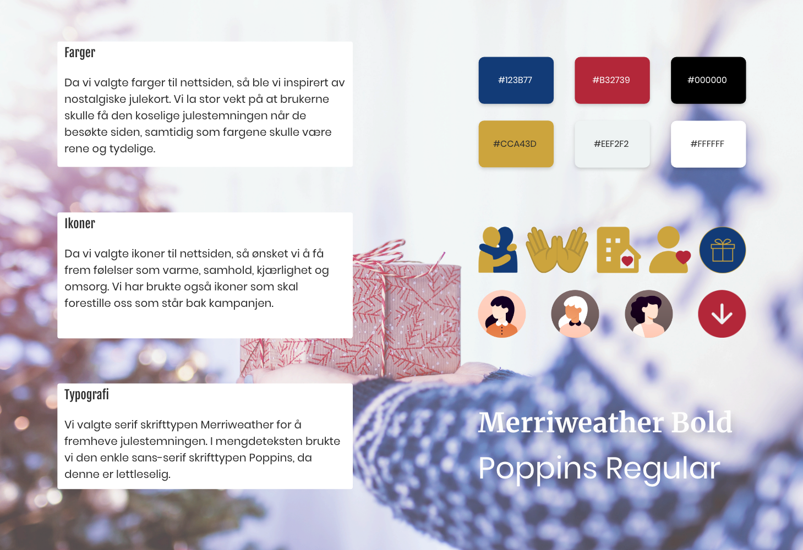
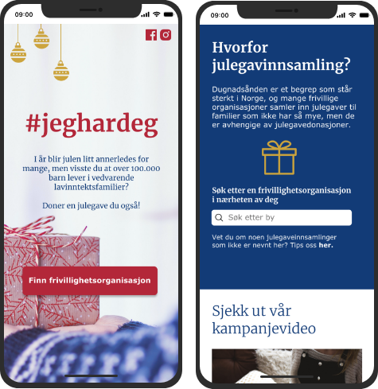

Introdokusjon
I dette prosjektet skulle vi lage en støttekampanje, bestående av en kampanjenettside og en rekke annonser, som oppfordret folk å engasjere seg i en sak. Tema for oppgaven valgte vi selv. Det ble lagt fokus på at sluttproduktet hadde et tydelig budskap og oppfordring (call to action) til å støtte den valgte organisasjonen/organisasjonene.
Oppdragsgiver
Fagskolen Kristiania
Team
Linh Nguyen, Jacqueline Lømsland Carroza & Amanda Jullum Ericsson
Tidsrom
23. september til 3. november 2020
Nettside
www.jeghardeg.noVerktøy


Prosessen

Prosesshåndtering
Gjennom hele prosessen brukte vi Notion for å ha kontroll på fremdriften vår. Dette gjorde at vi hele tiden hadde konkrete mål og delmål å forholde oss til, og visste til enhver tid hva vi skulle gjøre.
Research
Informasjonsinnhenting
Vi startet prosessen med å diskutere forskjellige ideer og refleksjoner vi hadde rundt temaet - både nasjonalt og internasjonalt. Etter litt research fant vi raskt ut at det var flere aksjoner som pågikk i oktober, som bl.a Rosa sløyfe-aksjonen til Brystkreftforeningen, og P3 sin aksjon «100 timer for havet» på vegne av WWF. Da dette er aksjoner som, heldigvis, får mye oppmerksomhet, så ønsket vi å finne en aksjon som ikke var like synlig.
Brainstorming
Siden det på det tidspunktet nærmet seg jul, så fikk vi ideen om å finne en organisasjon som samlet inn julegaver. Under researchen, så fant vi ut at det er over 110 000 barn som lever under det som kalles barnefattigdom i Norge. Det er de barna og ungdommene som er en del av en familie med vedvarende lav inntekt. Hvert år er det foreldre som ikke har råd til å gi barna sine julegaver, og selv om julen ikke bare handler om gaver, så betyr det mye for barn å kunne ha en så lik feiring som andre. Det preger også foreldrene som ikke har mulighet til å gi barna dette.
Etter disse funnene rådet det lenger ingen tvil om hva vi ønsket å lage - vi ville sette lys på dette temaet. Vi ønsket å øke bevisstheten blant folk, normalisere utfordringene og bidra til et økt engasjement. Vi anså det også som oppnåelig for oss å lage en slik kampanje, og veien videre ble da å finne seriøse aktører som organiserte dette.
Dette var aktørene vi fant, som hadde organisert julegaveinnsamlinger tidligere:
Videre research viste riktignok at det eksisterte noen utfordringer blant potensielle givere.
Utfordring 1: Det ene var at de syns det var anstrengende å måtte søke seg frem til de forskjellige innsamlingene.
Utfordring 2: Det andre var at det viste seg at en del rett og slett glemte å donere, til tross for at de egentlig ønsket å gjøre det. Vi antok at det kunne ha noe med å gjøre at de ikke ble eksponert for det jevnlig, som for eksempel via sosiale medier.
På bakgrunn av dette utarbeidet vi følgende overordnede problemstilling:
"Hva må til for at potensielle givere skal donere?"
Konseptutvikling
SWOT analyse
Vi ønsket så klart å nå ut til flest mulig mennesker, og på bakgrunn av problemstillingen lagde vi en SWOT analyse, basert på tre forskjellige konsepter. På denne måten kunne vi enklere se hvilket konsept vi ønsket å jobbe videre med.
Konsept
Med innsikten om utfordringene som fantes blant potensielle givere, så fant vi raskt ut at vi ønsket å gå for konsept nummer 3. Vi ønsket rett og slett å fremme alle de fantastiske aktørene som organiserer julegaveinnsamlinger, og dermed også nå ut til potensielle givere over hele landet. Vi begynte raskt å jobbe med konseptnavnet, og la mye vekt på at vi ønsket et navn som kunne brukes som hashtag, som var enkelt å huske og som hadde en nær relasjon til selve kampanjen. Det var noe utfordrende å finne et navn som ikke allerede tilhørte en eksisterende kampanje, men til slutt landet vi på #jeghardeg. Dette er inspirert av det engelske uttrykket «I got you», og beskriver måten mennesker kan hjelpe andre, som i dette tilfellet er via julegavedonasjoner.
Målgrupper
Etter å ha landet konsept, og konseptnavn, så begynte arbeidet med å finne ut hvem vi ønsket å rette oss mot. Vi valgte å dele opp målgruppene våre ut i fra markedsføringsteoriene om generasjoner, blant annet fordi disse teoriene inkluderer måter å nå ut til de forskjellige generasjonene.
Primærmålgruppe: Generasjon Y - født 1980-1994
De har vokst opp i et velferdssamfunn, i en stadig mer digital verden. De er fortrolige med teknologi, og er aktive på sosiale medier. Denne generasjonen kalles ofte «Gen-Why» da de ofte stiller kritiske samfunnsspørsmål. De er voksne nok til å ha en stabil inntekt, og mange i denne generasjonen har også etablert seg og fått barn. På bakgrunn av dette anså vi dette som en riktig målgruppe å treffe med vår kampanje.
Sekundærmålgruppe: Generasjon X - født 1965-1979
Generasjon X vokste opp i en tid der mødrene begynte å prioritere karriere, og skilsmisser ble vanligere enn tidligere. Dette kan være noen av grunnene til at generasjonen ofte beskrives som selvstendige. Mange har barn som enten har forlatt redet, eller relativt store barn som har begynt å forsørge seg selv.
Tertiærmålgruppe: Baby boomers - født 1946-1964
Baby boomers beskrives ofte som hardtarbeidende, og at de lever for å jobbe, istedenfor å jobbe for å leve. De tilhører gjerne stadiet «Post-parenthood» i teoriene om livssyklusen, hvilket vil si at de ikke har hjemmeboende barn, og dermed muligens romsligere økonomi. Disse er også dagens besteforeldre-generasjon. Felles for vår sekundær- og tertiærmålgrupper er at mange befinner seg på sosiale medier, og kanskje spesielt Facebook. De kan relatere til kampanjen på bakgrunn av egne barn og/eller barnebarn.
Personas
Primærmålgruppe
Sekundærmålgruppe
Tertiærmålgruppe
Målrettet problemstilling
Da målgruppene var på plass kunne vi lage oss en målrettet problemstilling tilknyttet selve kampanjen.
«Hvordan kan kampanjen #jeghardeg motivere og engasjere målgruppene til å donere julegaver til lavinntektsfamilier, via hjelpeorganisasjoner, gjennom vår kampanje?»
Design og wireframing
Vi gjorde en del research for å finne ut hva slags stemning vi ønsket at målgruppen skulle få da de besøkte kampanjenettsiden, og utarbeidet deretter brand persona og visuell identitet, før vi startet på wireframes.
Brand persona
Visuell identitet
Wireframes
Da vi begynte arbeidet med skisser for hvordan nettsiden skulle se ut, så jobbet vi etter prinsippet «mobile-first» da vi så det som sannsynlig at de aller fleste ville besøke kampanjenettsiden fra en mobiltelefon.
Lo-fi
Mid-fi
Hi-fi
Etter å ha definert hvordan vi ønsket at nettsiden skulle se ut på mobil, så itererte vi videre på desktop.
Iterasjon 1
Iterasjon 2

Iterasjon 3
Programmering
Da vi skulle kode prosjektet så var det Linh som fikk hovedansvar for det slik at vi ikke havnet i «jo flere kokker, desto mer søl»-fellen. Vi tok i bruk et API fra Mapbox, for å kunne lage en visuell og fin oversikt over julegaveinnsamlingene rundt om i Norge. På denne måten kunne potensielle givere enkelt navigere seg frem til en innsamling i nærheten av seg. Vi la også til et kontaktskjema, der det var mulighet til å tipse om julegaveinnsamlinger som ikke var inkludert på kartet. Dette kontaktskjemaet var knyttet opp i mot et Google Sheet, som vi kontinuerlig fulgte med på for å registrere nye julegaveinnsamlinger. Link til nettsiden ligger under introduksjonen til dette prosjektet.
Digital markedsføring
Markedsføringsstrategi
Vi kartla hvor målgruppene våre befant seg, og fant ut at primærmålgruppen var hyppige brukere av Instagram, men også Facebook. Sekundær- og tertiærmålgruppene befant seg hovedsakelig på Facebook. Og derfor bestemte vi oss for å opprette både en Facebook-side og en Instagram-bruker. Med tanke på at vi i vårt tilfelle skulle nå ut til privatpersoner, så fant vi også ut at det lønte seg å poste innlegg på ettermiddag/kveld, da det var da målgruppene var mest aktive på sosiale medier. Vi så det også som hensiktsmessig å poste innlegg både i hverdager og i helger.
Kampanjefilm
Vi bestemte oss raskt for at vi ønsket å lage en kampanjefilm som et virkemiddel i kampanjen. På denne måten antok vi at det var enklere å få oppmerksomheten til målgruppen, samt at det ville gi det hele et litt mer visuelt uttrykk. Dette var en veldig spennende del av prosjektet, da filmregi var noe vi hadde svært begrenset erfaring med fra tidligere. Vi utarbeidet et storyboard, for enklere å kunne se for oss hvordan vi ønsket at filmen skulle bli. Deretter fant vi skuespillere som skulle ha de forskjellige rollene, og begynte opptakene. Den ferdige kampanjefilmen er den som ligger øverst på dette prosjektet. Den gjorde det godt i sosiale medier, og ble både sett, likt og delt flere ganger enn vi kunne drømme om.
Digitale annonser
I tillegg til kampanjefilmen postet vi også digitale annonser hyppig på Instagram og på Facebook. Vi lagde annonser som både oppfordret målgruppen til å donere, og som var informative rundt utfordringene.


Hva har jeg lært gjennom prosjektet?
- Gjennom dette prosjektet så lærte jeg at det kan være lurt å ta seg god tid i innsiktsfasen i et slikt prosjekt. Vi var gjennom massevis av ideer før vi til slutt landet på julegaveinnsamling. I tillegg brukte vi god tid på å researche potensielle organisasjoner og forhørte oss rundt, men det var også det som til slutt ledet oss til å lage en slik kampanje
- Jeg fikk prøvd meg på filmregi og klipping av kampanjevideoen, og det var veldig interessant da jeg ikke hadde noe erfaring med det fra før. Det var veldig spennende å se at filmen gikk fra å være en ide til å bli en ferdig film
- Jeg fikk lært en del om hvordan sosiale medier fungerer når man har en slik type kampanje. Det var spennende å følge med på antall visninger vi hadde på innleggene vi la ut på Facebook og Instagram, og det gikk jo i grunn langt bedre det vi forventet på forhånd